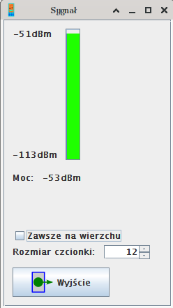

JYMAG - Okno mocy sygna³u

To okno pozwala na sprawdzenie poziomu mocy wykrywanej przez telefon (sygna³u operatora
w danym miejscu).
Port i jego ustawienia s± brane z g³ównego okna.
- Pasek mocy pokazuje graficznie bie¿±cy poziom mocy
- Etykieta z warto¶ci± mocy pokazuje liczbow± warto¶æ poziomu mocy sygna³u
- Wci¶nij "Wyj¶cie" ("Exit"), aby zamkn±æ okno
- Skorzystaj z pola rozmiaru czcionki, aby zmieniæ rozmiar czcionki w tym oknie
- Pole "Zawsze na wierzchu" ("Always on top") pozwala tak
ustawiæ okno, aby by³o zawsze widoczne